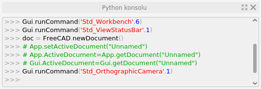

Python'a Giriş
Bu bölümün amacı, Python programlama dili hakkında kısaca bilgi vermek ve ardından FreeCAD programı içerisinde Python kodu yazmayı ve/veya yazdığımız kodları çalıştırmayı öğrenmektir.
mhalil.github.io
Bu bölümün amacı, Python programlama dili hakkında kısaca bilgi vermek ve ardından FreeCAD programı içerisinde Python kodu yazmayı ve/veya yazdığımız kodları çalıştırmayı öğrenmektir.
Bu, Python'a yeni başlayanlar için kısa bir eğitimdir. Python, açık kaynaklı, çok platformlu bir programlama dilidir. Onu diğer programlama dillerinden farklı ve yeni kullanıcılar için çok erişilebilir kılan çeşitli özelliklere sahiptir:
Python, İnsanlar tarafından okunabilecek şekilde tasarlanmıştır, bu da öğrenmeyi ve anlamasını nispeten kolaylaştırır.
Python, yorumlanır bir dildir, bu, programların çalıştırılmadan önce derlenmesine gerek olmadığı anlamına gelir. Python kodu, dilerseniz satır satır dahi olsa anında çalıştırılabilir.
Python, bir betik (script) dili olarak diğer programlara gömülebilir. FreeCAD, gömülü bir Python yorumlayıcısına sahiptir. FreeCAD'de parçaları işlemek için Python kodu yazabilirsiniz. Bu, kendi araçlarınızı oluşturabileceğiniz anlamına gelir.
Genişletilebilir, yeni modülleri kurulumunuza kolayca bağlayabilir ve işlevselliğini artırabilirsiniz. Örneğin, Python'un görüntüleri okumasına ve yazmasına, Twitter ile iletişim kurmasına, işletim sisteminiz tarafından gerçekleştirilecek görevleri zamanlamasına ,... vb. izin veren modüller vardır.
Aşağıda python konusunda temel bilgiler verilmiştir ve bu doküman eksiksiz bir eğitim değildir. Ancak FreeCAD ve mekanizmaları hakkında daha fazla araştırma yapmak için iyi bir başlangıç noktası sağlayacağını umuyorum. Aşağıdaki kod parçacıklarını bir Python yorumlayıcısına girmenizi şiddetle tavsiye ederiz.
Genellikle bilgisayar programları yazarken, bir metin düzenleyici veya özel programlama ortamınızı (temelde bazı ek araçlar içeren bir metin düzenleyicidir) açarsınız, programınızı yazarsınız, ardından derler ve çalıştırırsınız. Genellikle başlangıç seviyesinde bir veya daha fazla hata yapılır, bu nedenle programınız çalışmaz. Kodların doğru çalışmamasına dair neyin yanlış gittiğini bildiren bir hata mesajı alabilirsiniz. Ardından metin düzenleyicinize geri dönün, hataları düzeltin, tekrar çalıştırın, programınız istendiği gibi çalışana kadar tekrarlayın.
Python'da tüm süreç Python yorumlayıcısı içinde şeffaf bir şekilde yapılabilir. Yorumlayıcı, basitçe Python kodunu yazabileceğiniz komut istemine sahip bir Python penceresidir. Python'u bilgisayarınıza yüklediyseniz (Windows veya Mac kullanıyorsanız Python web sitesinden indirin, GNU/Linux kullanıyorsanız paket havuzunuzdan yükleyin), başlat menünüzde bir Python yorumlayıcısı olacaktır. Ancak, daha önce de belirtildiği gibi, FreeCAD ayrıca yerleşik bir Python yorumlayıcısına sahiptir.

FreeCAD içerisinde Python konsolunu Göremiyorsanız, Görünüm → Paneller → Python konsolu'na tıklayın. Python konsolu yeniden boyutlandırılabilir ve ayrıca yerinden ayrılabilir / taşınıp hareket ettirilebilir.
Yorumlayıcı, öncelikle bilgisayarınızda kurulu olan Python sürüm bilgisini, ardından komut istemi olan bir >>> sembolünü gösterir. Yorumlayıcı içerisinde kod yazmak basittir: her satır bir talimattır. Enter tuşuna bastığınızda, kod satırınız yürütülür/çalıştırılır. Örneğin, şunu yazmayı deneyin:
print("merhaba")print(), ekrana bir şey yazdıran bir Python komutudur. Enter'a bastığınızda işlem gerçekleştirilir ve merhaba mesajı yazdırılır. Bir hata yaparsanız, örneğin şunu yazalım:
print(merhaba)Python bunun hatalı bir kod olduğunu size hemen söyleyecektir. Bu durumda Python merhaba ifadesinin ne olduğunu bilmiyor. " " (çift tırnak) karakterleri, içeriğin bir metin parçası, programlama jargonunda dize (string) olduğunu belirtir. Bunlar olmadan print() komutu merhaba'yı tanımıyor. Python konsolunda iken klavyeden yukarı ok tuşuna basarak son kod satırına geri dönebilir ve kodu düzeltebilirsiniz.
Python yorumlayıcısı ayrıca yerleşik bir yardım sistemine sahiptir. Diyelim ki print(merhaba) komutu sonucunda neyin yanlış gittiğini anlamadık ve komut hakkında özel bilgi istiyoruz:
help("print")Bu komutu yazıp çalıştırdığınızda print() komutunun yapabileceği her şeyin uzun ve eksiksiz bir açıklamasını alacaksınız (açıklamalar konsol ekranında görüntülenecektir).
Artık Python yorumlayıcısını anladığınıza göre, daha ciddi şeylerle devam edebiliriz.
Programlamada sıklıkla bir isim altında bir değer saklamanız gerekir. İşte burada değişkenler devreye girer. Örneğin şunu yazın:
a = "merhaba"
print(a)Muhtemelen burada ne olduğunu anlamışsınızdır, merhaba dizesini (string) a adı altında kaydettik, a değişkenine atadık. Artık a bilindiğine göre, onu herhangi bir yerde kullanabiliriz, örneğin print() komutunda. Değişken olarak istediğimiz herhangi bir ismi kullanabiliriz, sadece boşluk karakteri veya noktalama işaretleri kullanmamak (değişken adı rakam ile başlayamaz) ve Python anahtar kelimeleri kullanmamak gibi bazı basit kurallara uymamız gerekiyor. Örneğin şunu yazabiliriz:
merhaba = "şahsi selamlama mesajım"
print(merhaba)Artık merhaba kelimesi tanımsız değil, bir değişken olarak tanımlanmış durumda. Değişkenler herhangi bir zamanda değiştirilebilir, bu yüzden değişkenler olarak adlandırılırlar, içerikleri değişebilir. Örneğin:
degiskenim = "merhaba"
print(degiskenim)
degiskenim = "hoşçakal"
print(degiskenim)Görüldüğü üzere degiskenim isimli değişkenin değerini değiştirdik.
degisken1 = "merhaba"
degisken2 = degisken1
print(degisken2)Değişkenlerinize anlamlı isimler vermenizi tavsiye edilir. Uzun süreli kodlama çalışmalarında, bir süre sonra değişkeninizin neyi temsil ettiğini hatırlamayabilirsiniz. Ancak, örneğin "hoşgeldiniz mesajım" adını verdiyseniz, amacını kolayca hatırlayacaksınız.
Python'da isimlendirme çok önemlidir; Degiskenim ile degiskenim ifadeleri aynı şey değil. Değişkeni tanımlarken isim olarak Degiskenim belirlemişseniz print(degiskenim) komutunu çalıştırdığınızda, değişkenin tanımlanmadığına dair hata alacaksınız. Python’da Büyük-küçük harf duyarlılığı vardır.
Tabii ki Python programları sadece metin dizeleriyle değil, her türlü veriyle uğraşabilir. Önemli olan, Python, ne tür verilerle uğraştığını bilmelidir. Print(merhaba) örneğimizde print() komutunun "merhaba" dizemizi tanıdığını gördük. " " karakterlerini kullanarak, aşağıdakilerin bir metin dizesi olduğunu belirttik.
type() komutu ile bir değişkenin veri türünü/tipini her zaman kontrol edebiliriz:
deger = "merhaba"
type(deger)Bu komut, deger değişkeninin türünün string olduğunu, string ifadesinin kısa biçimi olan 'str' ile gösterecektir.
Ayrıca tamsayı ve ondalıklı sayılar gibi başka temel veri türleri de vardır:
ilkSayi = 10
ikinciSayi = 20
print(ilkSayi + ikinciSayi)
type(ilkSayi)Python, 10 ve 20'nin tamsayılar olduğunu bilir, bu nedenle bu değerleri 'int' (integer yani tam sayı) olarak saklar ve Python, tamsayılarla yapabileceği her şeyi bu değişkenlerle yapabilir. Aşağıdaki kodu çalıştırıp sonucu görün:
ilkSayi = “10”
ikinciSayi = “20”
print(ilkSayi + ikinciSayi)Burada Python'u, iki değişkenimizin sayı değil metin parçaları olduğunu düşünmeye zorladık (değerleri "" karakteri içesisine yazdığımız için sayı değil dize türünde veri oluşturduk). Python iki parça metni birbirine ekleyebilir, ancak bu durumda elbette herhangi bir aritmetik işlem gerçekleştirmeyecektir, metinler yan yana yazılacaktır.
deger1 = 13
deger2 = 15.65
print("deger1'in türü ", type(deger1))
print("deger2'nin türü ", type(deger2))Tam sayılar ve Ondalıklı sayılar sorunsuz bir şekilde toplanabilir:
toplam = deger1 + deger2
print(toplam)
print(type(toplam))deger2 Ondalıklı sayı olduğu için, Python otomatik olarak sonucun bir Ondalıklı sayı olması gerektiğine karar verir. Ancak Python'un hangi türü kullanacağını bilmediği durumlar da vardır. Örneğin:
degerA = "merhaba 123"
degerB = 456
print(degerA + degerB)Bu kod çalıştırıldığı zaman bir hata ile karşılaşılır, degerA bir dizedir (string) ve degerB bir tamsayıdır ve Python ne yapacağını bilmez. Ancak, Python'u türler arasında dönüşüm yapmaya zorlayabiliriz:
degerB = str(degerB)Ayrıca bir değişkeni tamsayıya dönüştürmek için int() ve ondalıklı sayıya dönüştürmek için ise float() kullanabilir ve istersek float kullanabiliriz:
degerA = "123"
print(int(degerA))
print(float(degerA))print() komutunu birkaç şekilde kullandığımızı fark etmiş olmalısınız. Değişkenleri, toplamları, virgülle ayrılmış birkaç şeyi ve hatta başka bir Python komutunun sonucunu yazdırdık. Belki bu iki komutu da görmüşsünüzdür:
type(degerA)
print(type(degerA))Terminal / konsol içerisinde yazdığınızda, bu iki komut aynı sonucu verecektir. Bunun nedeni, yorumlayıcıda her şeyin otomatik olarak yazdırılmasıdır. Yorumlayıcının dışında çalışan daha karmaşık programlar yazdığımızda, bunlar otomatik olarak yazdırılmayacaktır, bu nedenle print() komutunu kullanmamız gerekecek. Bunu akılda tutarak, burada print() komutu kullanmayı bırakalım. Bundan sonraki anlatımlarda, kodları terminalde yazdığınızı düşünerek şu şekilde yazacağız:
deger = "merhaba arkadaşlar"
degerBir başka kullanışlı veri türü de bir listedir. Liste, diğer verilerin bir koleksiyonudur. Bir liste tanımlamak için [ ] kullanırız:
listem = [1, 2, 3]
type(listem)
diger_listem = ["Mustafa", "Halil", "Ersin"]
karma_listem = ["merhaba", 345, 34.567]Gördüğünüz gibi bir liste, her türlü veriyi (string, integer,...vb) içerebilir. Bir liste ile birçok şey yapılabilir. Örneğin, listedeki öğelerin miktarını hesaplayabiliriz:
len(diger_listem)Veya liste içerisindeki bir öğeyi alın:
ismim = diger_listem[0]
arkadasimin_ismi = diger_listem[2]len() komutu bir listedeki toplam öğe sayısını döndürürken (değer olarak bize verirken), listedeki ilk öğe her zaman 0 (sıfır) konumundadır, bu nedenle diger_listem listemizde "Ersin" 2. konumda olacaktır. Listeler içerisindeki öğeleri sıralamak, silmek ve listeye ekleme yapmak ta mümkündür.
Bir metin dizesi (string ifade), Python'daki bir karakter listesine çok benzerdir. Aşağıdaki kodları çalıştırmayı deneyin:
deger = "merhaba"
len(deger)
deger[2]deger = "merhaba" ifadesi, deger = ["m","e","r","h","a", "b", "a"] ile benzer şekilde kullanılabilir.
Genellikle listelerle yapabileceklerinizi stringlerle de yapabilirsiniz. Aslında hem listeler (list) hem de dizeler (string) sıralı yapıdır.
Dizeler, tamsayılar, ondalıklı sayılar ve listeler dışında, sözlükler gibi yerleşik veri türleri vardır ve hatta sınıflarla kendi veri türlerinizi oluşturabilirsiniz.
Liste kullanımının önemli, liste içerisinde gezinip öğlere sırayla erişmek ve her bir öğe ile bir şeyler yapma yeteneğidir. Örneğin şuna bakın:
tum_daltonlar = ["Joe", "William", "Jack", "Averell"]
for dalton in tum_daltonlar:
print(dalton + " Dalton")for in komutuyla listemizi döngüye soktuk (programlama jargonu) ve her bir öğeyle bir şeyler yaptık. Özel sözdizimine dikkat edin: for komutu : ile sonlanır, bu işaret (iki nokta üstüste), alt satırda bir kod bloğu olacağını belirtir. Yorumlayıcıda, : ile biten komut satırına girdikten hemen sonra komut istemi ... olarak değişecektir.
Python, for döngüsü içinde, sonraki satırlardan kaçının çalıştırılması gerektiğini nasıl bilecek? Bunun için Python girintiye güvenir. Sonraki satırlar bir boşluk veya birkaç boşluk veya bir sekme (TAB) veya birkaç sekme ile başlamalıdır. Girinti aynı kaldığı sürece satırlar for in bloğunun bir parçası olarak kabul edilecektir. Kod bloğunun bir satırına 2, sonraki satırına 4 boşluk bırakarak kod yazmaya başlarsanız, bir hata mesajı alırsınız, kodlarınız çalışmaz. Blokta yazacağınız kodlar bittiğinde, girintisiz başka bir satır yazmanız veya for in bloğundan geri dönmek için Enter tuşuna basmanız yeterlidir.
Girinti ayrıca programın/kodların okunabilirliğine de yardımcı olur. Büyük bir program yazarken büyük girintiler kullanırsanız (örneğin boşluklar yerine sekmeler (Tab) kullanırsanız), neyin neyin içinde çalıştırıldığını net bir şekilde görebilirsiniz. Diğer komutların da girintili kod blokları kullandığını göreceğiz.
for in komutu, birden fazla kez yapılması gereken birçok şey için kullanılabilir. Örneğin, range() komutuyla birleştirilebilir:
seri = range(1, 11)
toplam = 0
print("toplam")
for sayi in seri:
print(sayi)
toplam = toplam + sayi
print("----")
print(toplam)Eğer yorumlayıcıda help(range) yazarsanız şunu göreceksiniz:
range(...)
range(stop) -> list of integers
range(start, stop[, step]) -> list of integersBurada köşeli parantezler isteğe bağlı bir parametreyi belirtir. Ancak hepsinin tamsayı olması bekleniyor. Aşağıda adım (artış miktarı) parametresini int() kullanarak bir tamsayı olmaya zorlayacağız:
sayi = 1000
for i in range(0, 180 * sayi, int(0.5 * sayi)):
print(float(i) / sayi)Bir başka range() örneği:
tum_daltonlar = ["Joe", "William", "Jack", "Averell"]
for n in range(4):
print(tum_daltonlar[n], " is Dalton number ", n)range() komutu, 0 (sıfır) ile başlaması (başlangıç numarasını belirtmezseniz) ve son numarasının belirttiğiniz bitiş sayısından bir eksik olması gibi garip bir özelliğe sahiptir. Yani Bitiş değeri işleme dahil edilmez. Bu, elbette diğer Python komutlarıyla iyi çalışır. Örneğin:
tum_daltonlar = ["Joe", "William", "Jack", "Averell"]
toplam = len(tum_daltonlar)
for n in range(toplam):
print(tum_daltonlar[n])Girintili blokların bir başka ilginç kullanımı ise if komutudur. Bu komut, yalnızca belirli bir koşul karşılandığında bir kod bloğu çalıştırılır, örneğin:
tum_daltonlar = ["Joe", "William", "Jack", "Averell"]
if "Joe" in tum_daltonlar:
print("Joe Dalton'u liste içinde bulduk!!!")Elbette bu kod, "Joe Dalton'u liste içinde bulduk!!!" cümlesini yazdıracaktır, ancak ikinci satırı şununla değiştirmeyi deneyin:
if "Lucky" in tum_daltonlar:O zaman hiçbir şey yazdırılmaz çünkü Lucky ifadesi tum_daltonlar listesi içerisinde bulunmuyor. Başka bir ifade de belirtebiliriz:
tum_daltonlar = ["Joe", "William", "Jack", "Averell"]
if "Lucky" in tum_daltonlar:
print("Bu Dalton'u liste içinde bulduk!!!")
else:
print("Bu isimde bir Dalton liste içinde yok")Çok az standart Python komutu vardır ve bunların birçoğunu zaten biliyoruz. Ancak Python'da kendi komutlarınızı oluşturabilirsiniz. Aslında, Python kurulumunuza ekleyebileceğiniz ek modüllerin çoğu tam da bunu yapar, kullanabileceğiniz komutlar eklerler. Python'da özel komuta, fonksiyon denir ve şu şekilde tanımlanır:
def printmkare(deger):
print(str(deger) + " metrekare")
printmkare(45)def() komutu yeni bir fonksiyon tanımlar (def ifadesi, definition = tanım, belirtme kelimesinin kısaltmasıdır), ona bir isim verirsiniz, bu ismi siz belirlersiniz ve parantez içinde fonksiyonun kullanacağı argümanları tanımlarsınız. Bağımsız değişkenler, fonksiyona iletilecek verilerdir. Örneğin, len() komutuna bakın. Sadece len() yazarsanız, Python size bir argümana ihtiyacı olduğunu söyleyecektir ki bu çok açık: Bir şeyin uzunluğunu bilmek, öğrenemek istiyorsanız, o şeyi len() komutu içerisine yazmalısınız. len(listem) yazdığınızda, listem, ibaresi len() fonksiyonuna ilettiğiniz argüman olur. len() fonksiyonu, bu argümanla ne yapacağını bilecek şekilde tanımlanır. Aynı şeyi printmkare fonksiyonumuzla da yaptık.
deger adı, herhangi bir şey olabilir ve yalnızca fonksiyon içinde kullanılacaktır. Bu sadece argümana verdiğiniz bir isimdir, böylece onunla bir şeyler yapabilirsiniz. Argümanları tanımlayarak, fonksiyona kaç tane agrüman bekleyeceğini de söylersiniz. Örneğin, bunu yaparsanız:
printmkare(45, 34)bu kodu yazdığınızda bir hata oluşacaktır. Çünkü Fonksiyonumuz sadece bir argüman alacak şekilde programlandı, ancak iki adet argüman (45 ve 34) aldı. Başka bir örnek deneyelim:
def topla(deger1, deger2):
toplam = deger1 + deger2
return toplam
toplamDeger = topla(45, 34)Burada iki argüman alan, argümanları toplayan ve bu değeri döndüren (yani değeri, istenildiğinde kullanılabilecek şekilde hafızada tutan) bir fonksiyon yazdık. Bir şeyi döndürmek çok yararlıdır (bunun için return ifadesini kullanıyoruz). yukarıdaki kod ile yazılan iki sayı değerinin toplamını toplamDeger değişkenine atadık, bu değeri program içerisinde istediğimiz zaman kullanabileceğiz.
Artık Python'un nasıl çalıştığı hakkında iyi bir fikriniz olduğuna göre, bir şeyi daha bilmeniz gerekecek: Dosyalar ve modüllerle nasıl çalışılır.
Şimdiye kadar Python komutlarını, yorumlayıcıda satır satır yazdık. Bu yöntem, daha fazla kod barındıran, kapsamlı programlar için uygun değildir. Normalde Python programlarının kodu, .py uzantılı dosyalarda saklanır. Yalnız düz metin dosyaları olan bu kodları, herhangi bir metin düzenleyici (Linux'ta gedit, emacs, vi ve hatta Windows'ta Not Defteri ile) yazmak/oluşturmak ve düzenlemek mümkündür.
Bir Python programını çalıştırmanın birkaç yolu vardır. Windows'ta dosyanıza sağ tıklayın, Python ile açın ve çalıştırın. Ancak bunu FreeCAD Python Yorumlayıcısının kendisinden de çalıştırabilirsiniz. Bunun için yorumlayıcı, programınızın (kodlarınızın) nerede olduğunu bilmelidir. FreeCAD'de en kolay yol, programınızı FreeCAD'in Python yorumlayıcısının varsayılan olarak bildiği bir klasöre, örneğin FreeCAD'in kullanıcı Mod klasörüne yerleştirmektir. Bu klasör, işletim sistemlerine göre genellikle şu konumdadır:
/home/<username>/.FreeCAD/Mod/.%APPDATA%\FreeCAD\Mod\, yani C:\Users\<username>\Appdata\Roaming\FreeCAD\Mod\./Users/<username>/Library/Preferences/FreeCAD/Mod/.Buraya scripts adında bir alt klasör ekleyelim ve ardından şöyle bir kod yazalım ve dosyayı buraya kaydedelim:
def topla(a,b):
return a + b
print("test.py dosyası başarılı bir şekilde yüklendi ")Dosyayı scripts (komut dosyaları) klasörüne test.py ismiyle kaydedin ve yorumlayıcı penceresinde şunu yazın:
import test.py uzantısı olmadan yazıldığına dikkat edin. Bu, dosyanın içeriğini sanki yorumlayıcıda yazmışız gibi satır satır çalıştırılacaktır. Toplama (sum) fonksiyonu oluşturulacak ve yorumlayıcı içerisine mesaj yazdırılacaktır. Bu yazdığımız gibi fonksiyon içeren dosyalara modül denir.
Yorumlayıcıya bir topla() fonksiyonu yazdığımızda, onu şu şekilde çalıştırırız:
topla(14, 45)Ancak topla() işlevi içeren bir modülü içe aktardığımızda sözdizimi biraz farklıdır:
test.topla(14, 45)Yani modül bir container olarak içe aktarılır ve tüm fonksiyonları o konteynerın içindedir. Bu çok kullanışlıdır, çünkü birçok modülü içe aktarabilir ve her şeyi iyi organize edebiliriz. Temel olarak, aralarında bir nokta olan bir_şey.başka_bir_şey gördüğünüzde, bu, başka_bir_şey'in bir_şey'in içinde olduğu anlamına gelir.
Ayrıca topla() fonksiyonumuzu doğrudan ana yorumlayıcı alanına da aktarabiliriz:
from test import *
topla(12, 54)Hemen hemen tüm modüller bunu yapar; Yorumlayıcıda veya kendi Python modüllerinizde kullanabileceğiniz fonksiyonları, yeni veri türlerini ve sınıfları tanımlar, çünkü modülünüzdeki diğer modülleri içe aktarmanızı hiçbir şey engelleyemez!
Mevcut bilgisayarınızda, hangi modüllere sahip olduğunuzu (hangilerinin yüklü olduğunu), hangi fonksiyonların hangi modülün içinde olduğunu ve bunların nasıl kullanılacağını (yani ne tür argümanlara ihtiyaç duyduklarını) nasıl bilebiliriz? Python'un bir help() fonksiyonu olduğunu görmüştük.
help("modules")Yukarıdaki kodu konsolda yazdığımızda, bilgisayarımızda yüklü olan mevcut tüm modüller listelenecektir. Bunlardan herhangi birini içe aktarabilir ve modül içeriklerine dir() komutuyla göz atabiliriz:
import math
dir(math)math (Matematik) modülünde bulunan tüm işlevlerin yanı sıra __doc__, __file__, __name__ adlı garip şeyleri göreceğiz. İyi oluşturulmuş bir modüldeki her fonksiyonun, nasıl kullanılacağını açıklayan bir __doc__ vardır. Örneğin math (matematik) modülünün içinde bir sin() fonksiyonu olduğunu görüyoruz. Nasıl kullanılacağını bilmek ister misiniz?
print(math.sin.__doc__)Ekrandaki yazıda belirgin olmayabilir, ancak doc ifadesinin her iki tarafında iki adet alt çizgi (__) karakteri vardır.
Ve son bir ipucu: Yeni veya mevcut kod üzerinde çalışırken, FreeCAD'in makro dosyası uzantısı olan .FCMacro'yu kullanmamak, bunun yerine standart .py (python) uzantısını kullanmak daha iyidir. Bunun nedeni Python'un .FCMacro uzantısını tanımamasıdır. Kodlarınızı (modüllerinizi, fonksiyonlarınızı) kaydederken .py uzantılı dosya kullanırsanız, kodunuz daha önce gördüğümüz gibi import yöntemi ile kolayca FreeCAD içerisine dahil edilebilir ve ayrıca importlib.reload() ile yeniden yüklenebilir:
import importlib
importlib.reload(test)Ancak bir alternatif var:
exec(open("C:/PathToMyMacro/myMacro.FCMacro").read())Umarım artık Python'un nasıl çalıştığı hakkında iyi bir fikriniz vardır ve FreeCAD'in neler sunabileceğini keşfetmeye başlayabilirsiniz. FreeCAD'in Python işlevlerinin tümü farklı modüllerde iyi organize edilmiştir. FreeCAD'i başlattığınızda bazıları zaten yüklenir (içe aktarılır). Bunların neler olduğunu görmek için FreeCAD Python konsolunda şunu yazabilirsiniz:
dir()Kaynak: Discovering Python